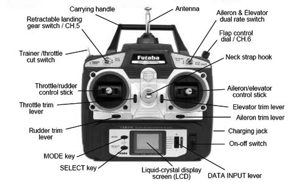

Обърнете внимание на тези точки,
когато поръчвате RC кола за начинаещи.
Тук ще намерите най-важните съвети за закупуване на RC автомобили за начинаещи:
Препоръка за възраст:
Колкото по-трудни са превозните средства за сглобяване и управление, толкова по-малко подходящи са те за
деца и младежи.
Сглобете внимателно комплектите:
Ако сте решили да закупите комплект, трябва да действате особено внимателно по време на сглобяването.
Макетен нож и други инструменти ще ви помогнат да сте сигурни, че всичко ще пасне добре накрая.
Заредете батерията:
Преди да излезете с вашия RC автомобил за първи път и след употреба е важно пълното зареждане на батерията.
Регулиране на кормилното управление или steering trim:
Вашият RC модел оборудван ли е със steering trim?
Настройте го правилно преди първото пробно шофиране, така че автомобилът да се движи направо и да завива в
желаната посока.
Изключете батерията:
Искате ли да съхранявате вашия RC автомобил зареден за няколко седмици или месеци?
Преди това трябва да изключете батерията от колата.
Няколко батерии:
Не винаги искате да чакате за презареждане на батерията?
Купете една или две резервни батерии, за да удължите времето за шофиране.
Грижете се и поддържайте редовно вашия RC автомобил:
Използвайте подходящи смазочни материали и защита от корозия за частите, които често влизат в контакт с
мръсотия и влага.
Например пиньони, зъбни колела, амортисьори и други части.
Проверявайте редовно дали всичко е стегнато и затегнете разхлабените винтове, ако е необходимо.
Малките, леки LiPo батерии осигуряват най-добра производителност. Те трябва да се съхраняват и зареждат
внимателно.
Много по-здрави и по-малко чувствителни са малко по-малко мощните NiMH (никел-метал-хидридни) батерии.
Важно е вашето зарядно да отговаря на типа батерия!
